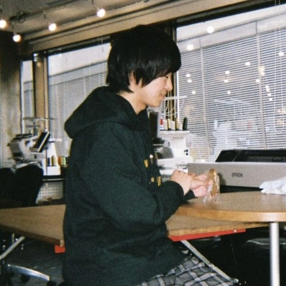

Kei Ichikawa

I'm PhD candidate at Institute of Science Tokyo (Former Tokyo Institute of Technology), under the supervision of Prof. Kazutoshi Sasahara. I'm studying how technology reshapes online human behaviour. Currently my work focus on how social media environments and artificial intelligence can either support or weaken resilience against disinformation and misinformation in online environments.
CV / with a full list of papers